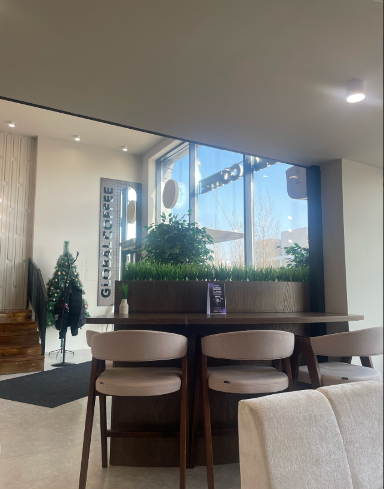

История и ценности Global Coffee
От маленького корнера в столице до сети современных specialty-пространств с собственной обжаркой.
Как зарождалась кофейная культура Астаны
В 2021 году мы открыли первую кофейню на улице Туркестан, 4Б с простой мечтой: варить для астанчан честный, чистый и вкусный кофе свежей обжарки. Мы отказались от темной коммерческой обжарки в пользу бережного профилирования зерна, раскрывающего натуральные дескрипторы ягод, фруктов и карамели.
Сегодня Global Coffee — это место встреч предпринимателей, студентов, дизайнеров и семейных пар. Мы бережно сохраняем атмосферу уюта, где каждый гость чувствует себя желанным другом.

Три золотых стандарта качества
100% Specialty Арабика
Мы отбираем лоты с оценкой Q-грейдинга выше 84 баллов из Эфиопии, Кении, Колумбии и Бразилии без использования химических ароматизаторов.
Точный контроль экстракции
Каждое утро бариста настраивают рецепт эспрессо по электронным весам с точностью до 0.1 г и замеряют TDS для идеального баланса кислотности и сладости.
Эко-ответственность
Мы используем биоразлагаемые стаканчики, поощряем скидкой 10% гостей со своими термокружками и передаем кофейный жмых для озеленения парков.